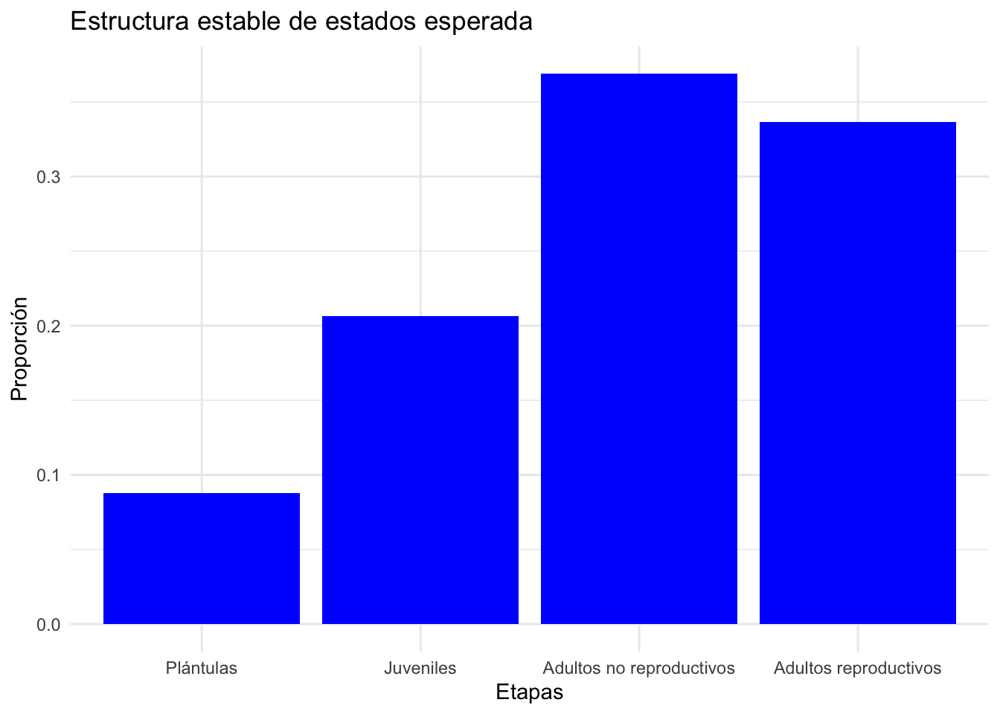

Code
library(popdemo)
library(popbio)
library(ggplot2)
library(dplyr)
library(scales)
library(Rage)library(popdemo)
library(popbio)
library(ggplot2)
library(dplyr)
library(scales)
library(Rage)En este capitulo revisamos algunos de los indices principales de los análisis de matriz. Algunos de estos indices describe la calidad de la matriz y es primordial evaluar la matriz, ya que si no cumple con algunos de las condiciones los resultados y interpretaciones pudiesen ser invalido. Cubriremos los siguientes indices, Dimensión cuadrada, Ergocidad, no Negativa, Irreducibilidad, Primitividad. La segunda parte cubrirá, Análisis de Convergencia, Análisis de Amortiguamiento, Valor reproductivos, Estructura Estable, que describe el comportamiento de la población en el largo plazo. Estos índices aporta a la diversidad de herramienta para evaluar como la población a largo plazo se comporta y después de un disturbio. Para más detalles que lo que se presenta a continuación sobre cada uno de estos indices vean (Caswell, 2001) y (Stott, Townley & Hodgson, 2011).
#Capturar los datos de la matriz para L. rubripetala (Tremblay et al. 2015)
Lr1 <- matrix(c(0.4324, 0, 0, 0.15,
0.3784, 0.8459, 0, 0,
0, 0.0034, 0.7954,0.2300,
0, 0.0890, 0.1841,0.7510), byrow=TRUE,ncol=4)
#Capturar las categorias de estado
estadios <- c("PL", "J", "NR", "AR")
colnames(Lr1) <- rownames(Lr1) <- estadios
#Obtener la matriz L. rubripetala
Lr1 <- matrix(Lr1[1:4, ], nrow = 4, dimnames = list(estadios, estadios))
Lr1 PL J NR AR
PL 0.4324 0.0000 0.0000 0.150
J 0.3784 0.8459 0.0000 0.000
NR 0.0000 0.0034 0.7954 0.230
AR 0.0000 0.0890 0.1841 0.751Las matriz poblacional tienen que tener un número igual de filas y columnas, es decir, ser cuadrada. Esto es importante porque cada fila representa una categoría de edad o etapa de la población y cada columna representa la transición de una categoría a otra. Si la matriz no es cuadrada, entonces no se puede calcular la tasa de crecimiento poblacional, ya que no se puede comparar el número de individuos en cada categoría de edad o etapa con el número de individuos en las otras categorías. En el caso de Lepanthes rubripetala la matriz es cuadrada, ya que tiene 4 filas y 4 columnas. Usando la función dim de R podemos comprobar que la matriz es cuadrada, ya que el número de filas es igual al número de columnas.
dim(Lr1)[1] 4 4Se dice que una población es ergódica si el crecimiento asintótico es independiente de la estructura poblacional al inicio del estudio. En otras palabras, una población ergódica es aquella que, independientemente de su estado inicial, converge a un comportamiento estable a largo plazo. Esto significa que, con el tiempo, la población alcanzará una estructura poblacional estable y una tasa de crecimiento constante. Una población que no estuviese ergódica, podría tener un crecimiento poblacional que depende de la estructura poblacional inicial, lo que significa que el promedio o la tasa de crecimiento poblacional no es un buen predictor del crecimiento poblacional a largo plazo (Mangalam & Kelty-Stephen, 2022). Podemos evaluar si la matriz es ergódica aplicando la función isErgodic del paquete popbio. Esta función devuelve un valor lógico que indica si la matriz es ergódica o no. Si la matriz es ergódica, el valor devuelto será “TRUE”, de lo contrario será “FALSE”. En el caso de Lepanthes rubripetala se espera que la matriz sea ergódica, ya que los autores reportan que la población alcanza una estructura estable y una tasa de crecimiento constante a largo plazo (Tremblay, Raventos & Ackerman, 2015).
isErgodic(Lr1, digits=5, return.eigvec=FALSE)[1] TRUEAhora creemos una matriz no ergódica, que es una matriz que no cumple con la condición de ergodicidad. En este caso, ningun individuo pasa del estadio de plántula al estadio juvenil, o los de adultos. Usando la misma función isErgodic podemos comprobar que la matriz no es ergódica, ya que el valor devuelto será “FALSE”. Esto significa que el crecimiento poblacional de la población no es independiente de la estructura poblacional al inicio del estudio y, por lo tanto, no se puede esperar que la población alcance una estructura estable y una tasa de crecimiento constante a largo plazo.
#Capturar los datos de la matriz para L. rubripetala (Tremblay et al. 2015)
Lr1_No_erg <- matrix(c(0.4324, 0., 0., 0.15,
0., 0.8459, 0., 0.,
0., 0.0034, 0.7954,0.2300,
0., 0.0890, 0.1841,0.7510), byrow=TRUE,ncol=4)
plot_life_cycle(Lr1_No_erg, stages=estadios, fontsize = 10)isErgodic(Lr1_No_erg, digits=5, return.eigvec=FALSE)[1] FALSELa matriz de población debe ser no negativa, lo que significa que todos sus elementos deben ser mayores o iguales a cero. Esto es importante porque una matriz con elementos negativos no tiene sentido en el contexto de una población, ya que no se pueden tener individuos negativos. Si la matriz tiene elementos negativos, entonces no se puede calcular la tasa de crecimiento poblacional, ya que no se puede comparar el número de individuos en cada categoría de edad o etapa con el número de individuos en las otras categorías. En el caso de Lepanthes rubripetala la matriz es no negativa, ya que todos sus elementos son mayores o iguales a cero. Usando la función IsPositive creado aquí podemos comprobar que la matriz es no negativa, ya que el valor devuelto será “TRUE”.
# No negativa
IsPositive <- function(mat) {
if (all(mat >= 0)) {
return(TRUE)
} else {
return(FALSE)
}
}
IsPositive(Lr1)[1] TRUEAquí un ejemplo de una matriz no negativa, que es una matriz que no cumple con la condición de no negatividad. En este caso, el elemento en la posición (4, 3) es negativo, lo que significa que hay una transición negativa de la categoría adulto grande a la categoría adulto pequeños. Usando la misma función IsPositive podemos comprobar que la matriz no es no negativa, ya que el valor devuelto será “FALSE”. Esto significa que la matriz no es válida para el análisis de dinámica transitoria y no se puede esperar que la población alcance una estructura estable y una tasa de crecimiento constante a largo plazo.
#Capturar los datos de la matriz para L. rubripetala (Tremblay et al. 2015)
Lr1_No_pos<- matrix(c(0.4324, 0, 0, 0.15,
0.3784, 0.8459, 0, 0,
0, 0.0034, 0.7954,-0.2300,
0, 0.0890, 0.1841,0.7510), byrow=TRUE,ncol=4)
IsPositive(Lr1_No_pos)[1] FALSELa matriz de transición poblacional debe ser irreducible, lo que significa que todos los elementos de la matriz están conectados y hay una ruta desde cualquier estadio o otro estadios. Esto es importante porque si la matriz no es irreducible, entonces no se puede esperar que la población alcance una estructura estable y una tasa de crecimiento constante a largo plazo. En el caso de Lepanthes rubripetala la matriz es irreducible, ya que todos sus elementos están conectados y hay una ruta desde cualquier categoría de edad o etapa a todas las otras categorías. Usando la función isIrreducible del paquete popdemo podemos comprobar que la matriz es irreducible, ya que el valor devuelto será “FALSE”. Aun que hay matriz que son reducible y pueden ser aceptable. Por ejemplo, especies que tiene una etapa de vida que no es importante para el crecimiento poblacional, tal como las etapas por reproductiva en mamíferos (humanos, ballenas, etc.).
Nota aquí que la función isIrreducible devuelve “TRUE” si la matriz es irreducible y “FALSE” si no lo es. En el caso de Lepanthes rubripetala la matriz es irreducible. Esto significa que todos los elementos de la matriz están conectados y hay una ruta desde cualquier categoría de edad o etapa a todas las otras categorías, lo que permite que la población alcance una estructura estable y una tasa de crecimiento constante a largo plazo.
isIrreducible(Lr1)[1] TRUEAquí se añade un ejemplo de una matriz valores de reproducción al cuarto estadio, dando un resultado de “FALSE”, lo que significa que la matriz es reducible. Esto significa que no hay una ruta desde la categoría plántula a la categoría adulto reproductivo y o que no hay reproducción lo que no termina el ciclo de vida incompleto.
Lr1_Irr <- matrix(c(0.4324, 0., 0.0, 0,
0.3784, 0.8459, 0, 0,
0., 0.0034, 0.7954, 0.2300,
0, 0.0890, 0.1841, 0.7510), byrow=TRUE,ncol=4)
isIrreducible(Lr1_Irr)[1] FALSELa matriz de transición poblacional debe ser primitiva, lo que significa que al elevar la matriz a altas potencias, se obtiene un único valor positivo (i.e. tasa de crecimiento poblacional). Esto es importante porque si la matriz no es primitiva, entonces no se puede esperar que la población alcance una estructura estable y una tasa de crecimiento constante a largo plazo. En el caso de Lepanthes rubripetala la matriz es primitiva, ya que al elevarla a altas potencias se obtiene un único valor positivo. Usando la función isPrimitive del paquete popdemo podemos comprobar que la matriz es primitiva, ya que el valor devuelto será “TRUE”. Una matriz no-primitiva tendría una dinámica poblacional que a largo plazo no seria estable, por ejemplo, una comportamiento cíclico, donde la población oscila entre diferentes categorías de edad o etapa sin alcanzar una estructura estable y una tasa de crecimiento constante a largo plazo. Una matriz irreducible es por definición primitiva, pero una matriz primitiva no es necesariamente irreducible. Por ejemplo, una matriz que tiene un ciclo de vida completo y que tiene una categoría de edad o etapa que no es importante para el crecimiento poblacional puede ser primitiva pero no irreducible.
isPrimitive(Lr1)[1] TRUEEn esta sección se revisan los índices que describen la matriz poblacional después de asegurar que cumple con los supuestos anteriores. Estos índices son importantes para entender el comportamiento de la población a largo plazo y cómo se espera que evolucione en el tiempo. Los índices que se revisarán son: Estructura Estable, Valor reproductivos, Análisis de Convergencia, Análisis de Amortiguamiento. Estos índices se calculan a partir de la matriz de transición poblacional y el vector de la estructura poblacional observada al inicio del estudio.
La estructura poblacional estable (w, también denominado el eigenvector de la derecha) es un índice de la distribución proporcional de la población que se espera que esta población alcance en el largo plazo. En el caso de Lepanthes rubripetala se espera que la población alcance una estructura estable de 0.088, 0.206, 0.369 y 0.337 para las categorías de plántulas, juveniles, adultos no reproductivos y adultos reproductivos, respectivamente. Esta estructura asume que el crecimiento poblacional \(\lambda\) sigue igual y constante en el tiempo. Para una especie alcanzar una estructura estable, el ambiente debería ser constante y sin cambios, lo cual es raramente el caso en la naturaleza. Esto asume que el periodo de muestreo y las condiciones abióticas y bióticas son típicas y constantes. En un análisis de revisión de literatura Williams et al. (Williams et al., 2011) encontraron que más del 80% de las poblaciones no cumplía con la condición de estructura estable. En adición observaron que mayor desviación se observaba en poblaciones con tiempo de generación largas y matriz grandes (n x n). Una revisión rápida de la matriz de orquídeas en general las poblaciones en el momento del comienzo de los estudios no cumplía con una estructura estable.
#Estructura estable de estados
stable.stage(Lr1) PL J NR AR
0.08789851 0.20619682 0.36907404 0.33683063 Uno puede visualizar la estructura la estructura de la población usando el codigo siguiente.
Wmax <- stable.stage(Lr1)
Wdf=data.frame(Wmax)
Wdf$Categorias=c("Plántulas","Juveniles","Adultos no reproductivos","Adultos reproductivos")
Wdf$Categorias=factor(Wdf$Categorias, levels=c("Plántulas","Juveniles","Adultos no reproductivos","Adultos reproductivos"))
library(ggplot2)
ggplot(Wdf, aes(y=Wmax, x=Categorias)) +
geom_bar(stat="identity", fill="blue") +
labs(title="Estructura estable de estados esperada", x="Etapas", y="Proporción") +
theme_minimal()

El valor reproductivo (v, también denominado el eigenvector de la izquierda) es un índice que mide la contribución esperada de cada categoría de edad o estadio a la reproducción de la población. En el caso de Lepanthes rubripetala se espera que el valor reproductivo sea 1.00, 1.52,2.32 y 2.66 para las categorías de plántulas, juveniles, adultos no reproductivos y adultos reproductivos, respectivamente. Este índice es importante porque permite entender cómo se distribuye la reproducción en la población y qué categorías de edad o etapa son más importantes para el crecimiento poblacional a largo plazo. Siempre la primera etapa tiene un valor reproductivo de 1.00, ya que es la etapa de inicio del ciclo de vida y se considera como la base para calcular el valor reproductivo de las otras etapas.
El valor reproductivo pudiese ayudar en el manejo de las especies. En especies invasivas como Spathoglottis plicata, para tratar de controlar el crecimiento de la especie seria de enfocarse en los estadios de con el valor reproductivo más alto. Al contrario, si uno quisiera remover individuos de una población y tener el impacto menor en esta población, los estadios con menor valor reproductivo serían los más adecuados para remover.
# Valor reproductivo
reproductive.value(Lr1) PL J NR AR
1.000000 1.519043 2.316113 2.664676 El análisis de convergencia es un índice que mide el tiempo esperado en que una población alcanza la estructura estable de una población con un crecimiento asintótico. Cuan rapido la población converge a su estructura estable después de un disturbio, más grande el índice de amortiguamiento más rápido converge a la estructura estable (Stott, Townley & Hodgson, 2011). Este índice es importante porque permite entender cómo se comporta la población a largo plazo y cómo se espera que evolucione en el tiempo.
El indice de amortiguamiento se mide evaluando el efecto de \(\lambda\) subdominante durante el periodo de convergencia. El índice de amortiguamiento es una medida de que tan rápido (ciclos en tiempo de la matriz; meses, años) para que converge una población a la estructura estable (Stott, Townley & Hodgson, 2011). Este último se calcula dividiendo el valor propio dominante (el eigenvalue) con el segundo valor dominante (la parte real), por consecuencia es una medida de cuan rápido la población regresa a su estructura poblacional estable después de un disturbio.
Entonces el valor de \(\rho\) (rho) se define como:
\[\mathbf{\rho=\frac{\lambda_1}{\left|\lambda_2\right|}}\] y es el valor propio dominante de la matriz de transición poblacional sobre el módulo del valor propio subdominante mayor, es el índice de amortiguamiento damping ratio. El índice de amortiguamiento es un índice sin unidades y es independiente de la estructura original de la población (el vector de tamaño de muestra de cada etapa).
En el caso de Lepanthes rubripetala vemos la lista de los valores propio usando la función eigen. El valor dominante es \(\lambda_1= 1.00721\) y el valor \(\lambda_2= 0.8319\), por consecuencia el valor de amortiguamiento es 1.00721/abs(0.8319) se espera que el índice de amortiguamiento sea 0.99, lo que indica que la población converge rápidamente a su estructura estable después de un disturbio. Este índice es importante porque permite entender cómo se comporta la población a largo plazo y cómo se espera que evolucione en el tiempo.
Los siguientes indices son una medida basado en el tiempo de las transiciones si bien, la mayoría de los datos de los estudios poblacionales han sido colectados para un periodo de tiempo anual (Crone et al., 2011), es importante recordar que algunos han sido colectados mensual, bimensualmente, por estación o de forma bianual, dependiendo del ciclo de vida de la especie de estudio.
eigen(Lr1)$values # la lista de valores propios de la matriz Lr1[1] 1.0072061+0.00000000i 0.8319189+0.00000000i 0.4927875+0.06468183i
[4] 0.4927875-0.06468183iDR= eigen(Lr1)$values[1]/abs(eigen(Lr1)$values[2])
DR[1] 1.210702+0idr(Lr1) # usando la función "dr" en el paquete "popdemo"[1] 1.210702El tiempo de convergencia es el tiempo esperado para la población llegue a su estructura estable. Este índice es importante porque permite entender cómo se comporta la población a largo plazo y cómo se espera que evolucione en el tiempo. El tiempo de convergencia se calcula usando dos diferentes funciones dr y la función convt del paquete popdemo. La funcióndr, el tiempo hasta la convergencia puede estimarse calculando log(dr)/log(x), que es el tiempo que tarda el valor propio dominante en ser \(x\) veces mayor que el valor propio subdominante mayor. \(dr\) = damping ratio y \(t\) es el tiempo en la misma unidad de la matriz (días, meses, años, etc).
El análisis de amortiguamiento estima la rapidez con la que una población converge a su estructura estable después de un disturbio (Jiang et al., 2020). El indice de amortiguamiento \(d > 0\), y más grande el indice de amortiguamiento más rápido la población converge a la estructura estable. Se ha demostrado que hay una relación entre el indice de amortiguamiento y tiempo de generación de una especie (Jiang et al., 2020). El tiempo de amortiguamiento se calcula \(\tau=1/d\).
dr(Lr1, return.time = TRUE, x=10) # cuanto tiempo toma aumentar la población de veces $dr
[1] 1.210702
$t
[1] 12.04278Usando la función \(contv\) del paquete popdemo devuelve el tiempo esperado para que la población alcance su estructura estable, dado un vector de la estructura poblacional observada al inicio del estudio. La uncieon \(contv\) funciona simulando el modelo y manualmente detemrinando el crecimiento cuando la convergencia llegue a una exactitud accuracy especificado. Más pequeñas la exactitud más tiempo tomará a llegar a una convergencia para la misma matriz y vector. Aqui se tiene quie especificar el vector, o sea la cantidad de individuos por cada estadio. En el caso de Lepanthes rubripetala se espera que el tiempo de convergencia sea de 18 ciclos (i.e. meses) para alcanzar su estructura estable basado el vector y la exactitud especificado.
Si comenzamos con una población cerca a la estructura estable, podemos calcular el tiempo de convergencia. Digamos que se comienza con una población de 8, 20, 27 34 individuos en las etapas plantulas, juveniles, adultos no reproductivos y adultos reproductivos, respectivamente. En este caso se espera que la población alcance la estructura estable en 6 meses. En este caso vemos que el tiempo de convergencia es mucho más corto que si se comienza con una población sesgada de solamente plántulas. Es acercamiento puede ser util cuando se hace trabajo de conservación, por ejemplo se establece una nueva población con x cantidades de individuos en cada etapa.
n0 <- c(8, 20, 27, 34) # la estructura de la población inicial
convt(Lr1, accuracy = 1e-4, vector = n0, iterations = 10000) # la estructura poblacional inicial[1] 18El tiempo de convergencia puede ser calculado a base de la cantidad de individuos en las diferentes etapas o edades. El tiempo de convergencia es el tiempo esperado en que una población alcanza la estructura estable. En el caso de Lepanthes rubripetala se espera que la población alcance la estructura estable en 25 meses si se comienza con una población sesgada de solamente plántulas (n=1000) y ninguno en las etapas subsiguientes al principio de la simulación.
# Tiempo de convergencia
n = c(1000, 0, 0, 0)
tconvergencia <- convt(Lr1, accuracy = 1e-3, vector = n)
tconvergencia[1] 25Revisión:
RLT 2025_06_02